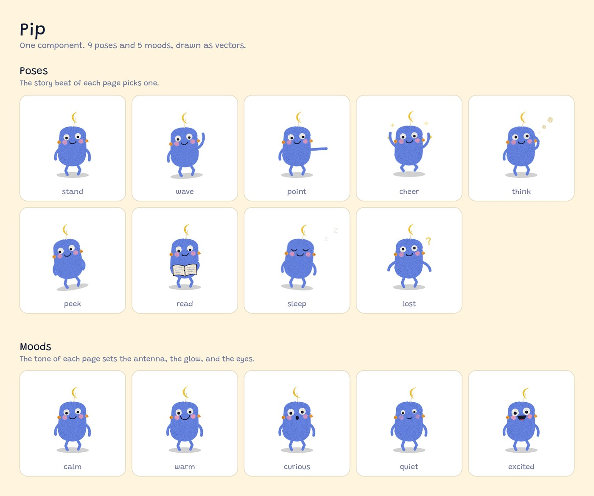
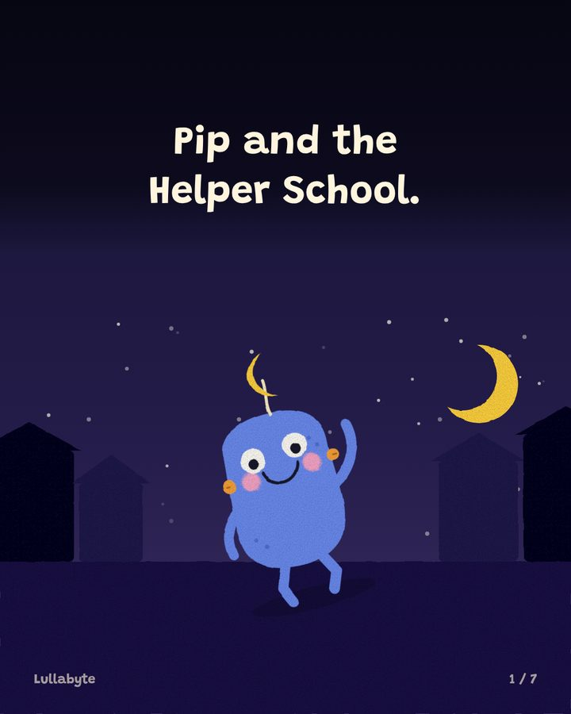
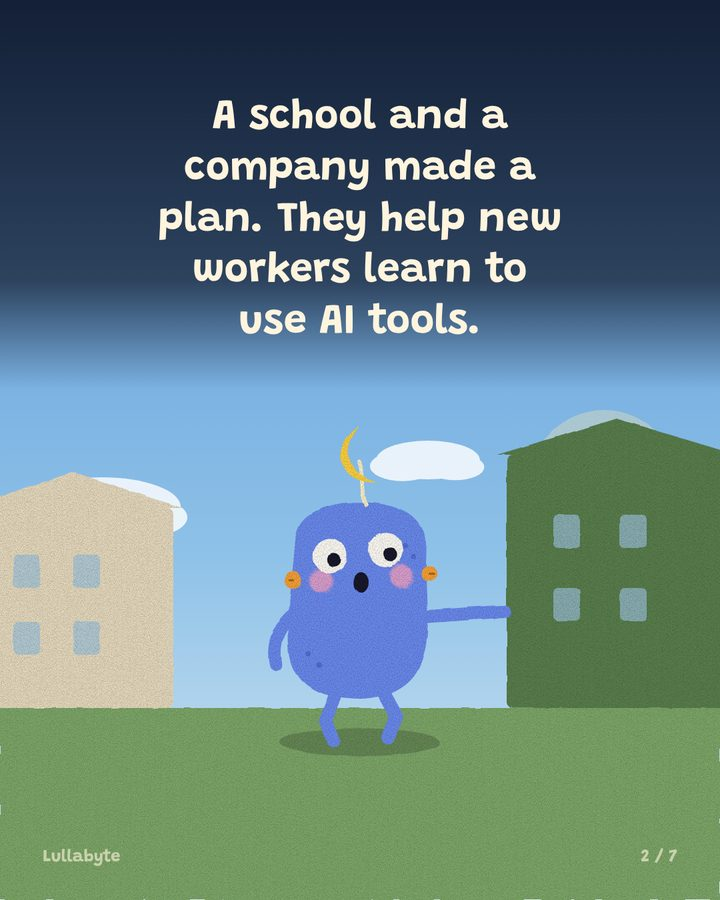
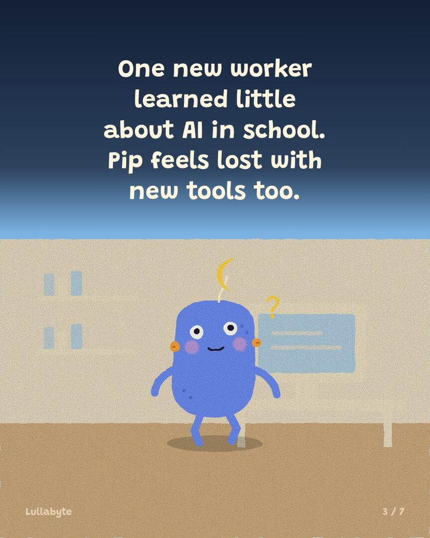
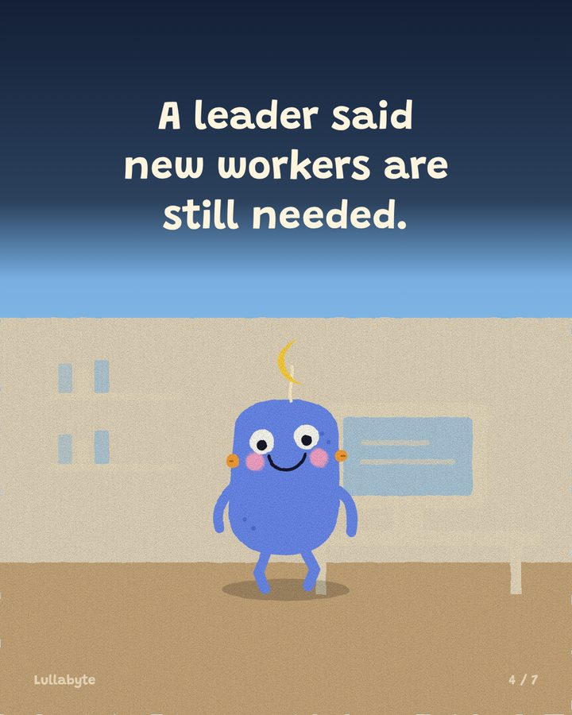
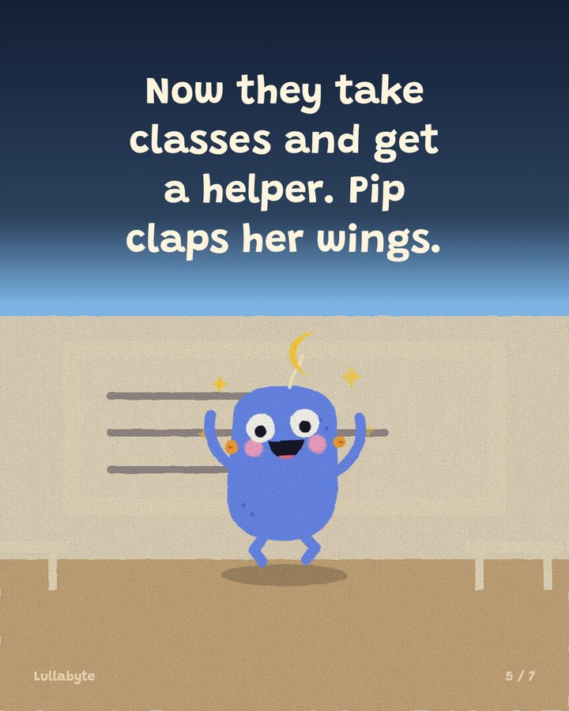
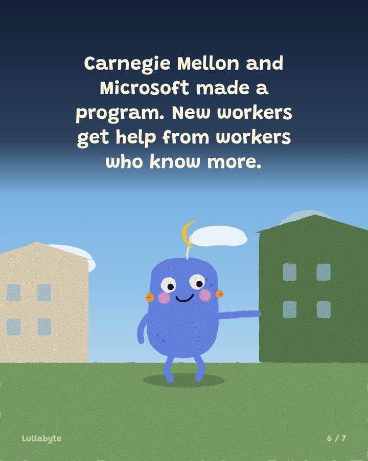
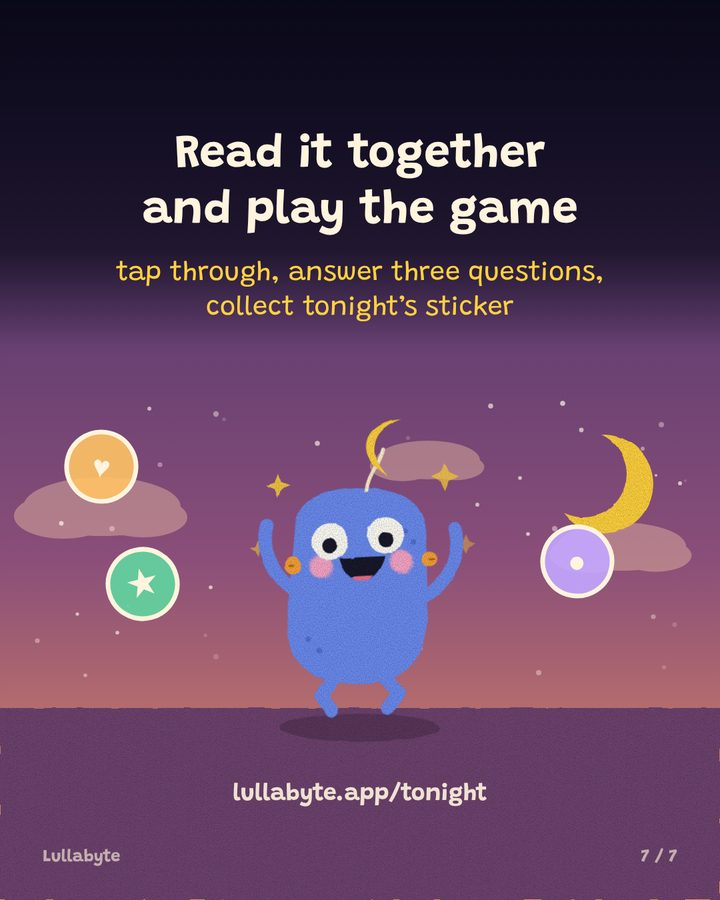

One AI news story a day, retold as a bedtime picture book for ages 5 to 10. This page is for an illustrator: what exists today, and where it falls short.
Open the story, ages 5 to 7Ages 8 to 10
Best on a phone, held upright. It rotates to a wide layout in landscape.
Nothing is generated by an image model. Every scene is assembled from vector components, so the character is identical on every page by construction, not by luck, and each object can be tapped or animated on its own. The drawing below is produced by the same code that draws the story, so it cannot disagree with what ships.

Open as SVG to inspect or trace the shapes.
Instagram and Threads get a carousel cut from the same pages, ending on a card that sends readers to the story above.







The pipeline works. The drawing is not picture book quality, and that is the gap we would like help with.
A redraw replaces the artwork without changing the pipeline or rewriting a single story, so this work can happen independently of everything else.